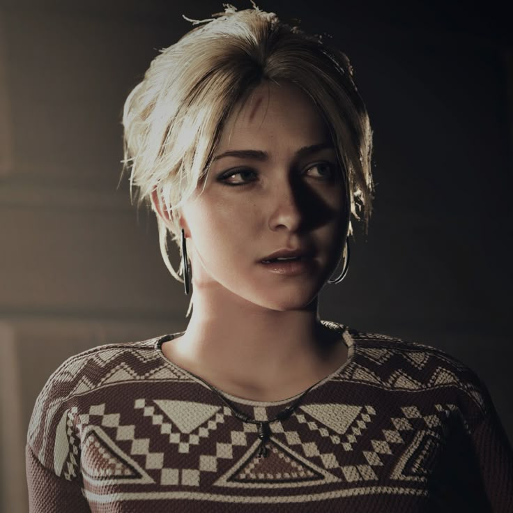
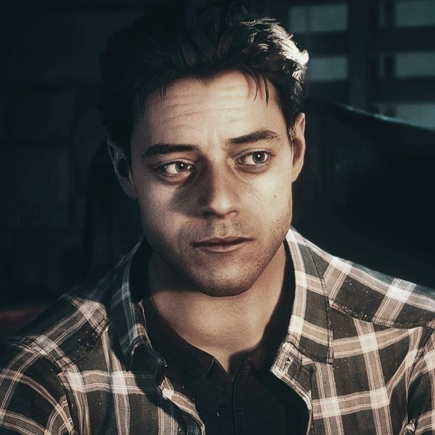
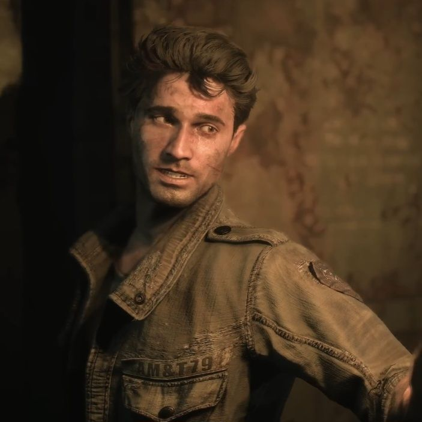
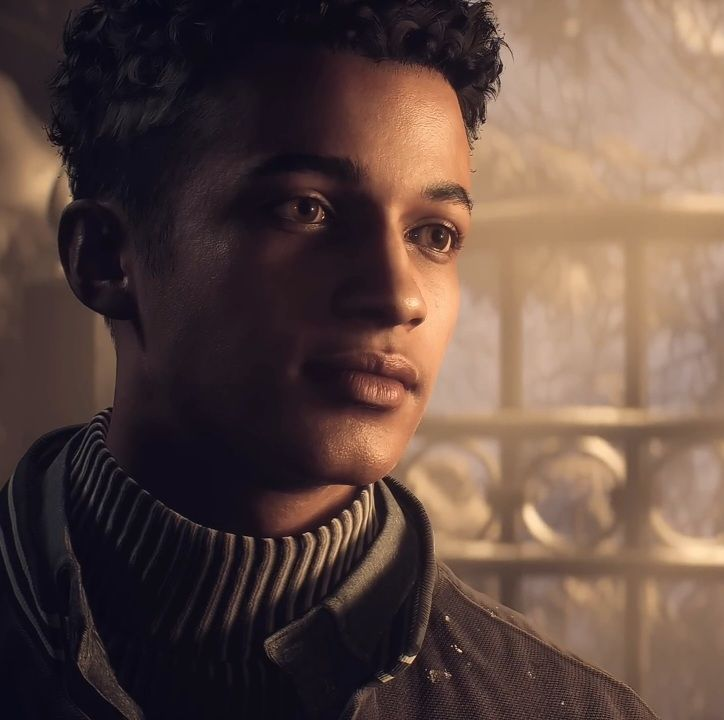
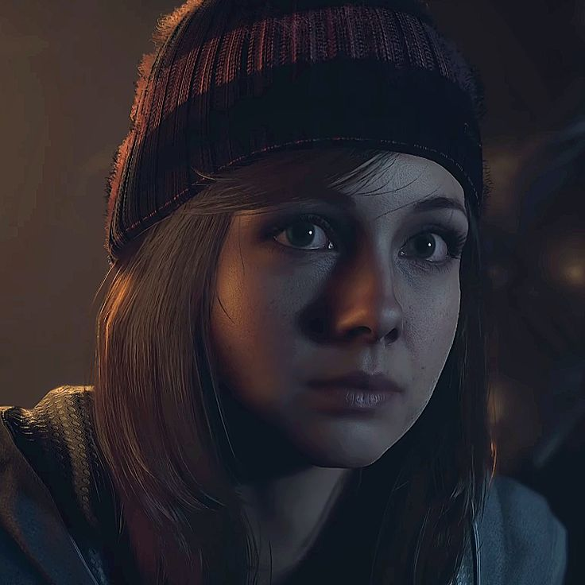
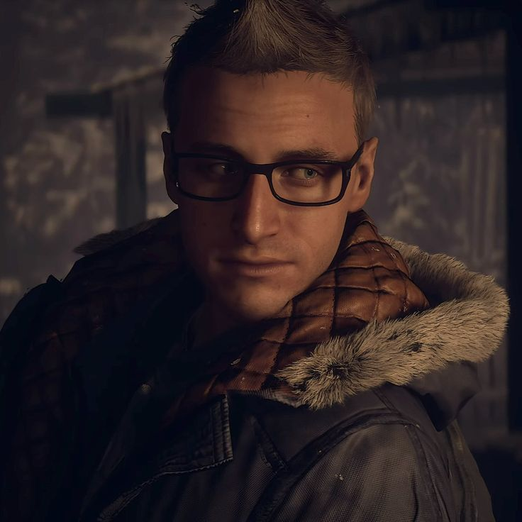
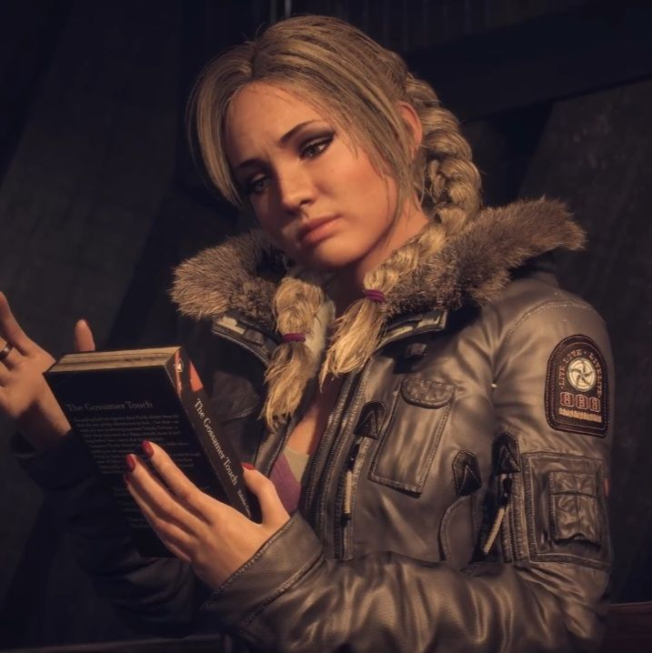
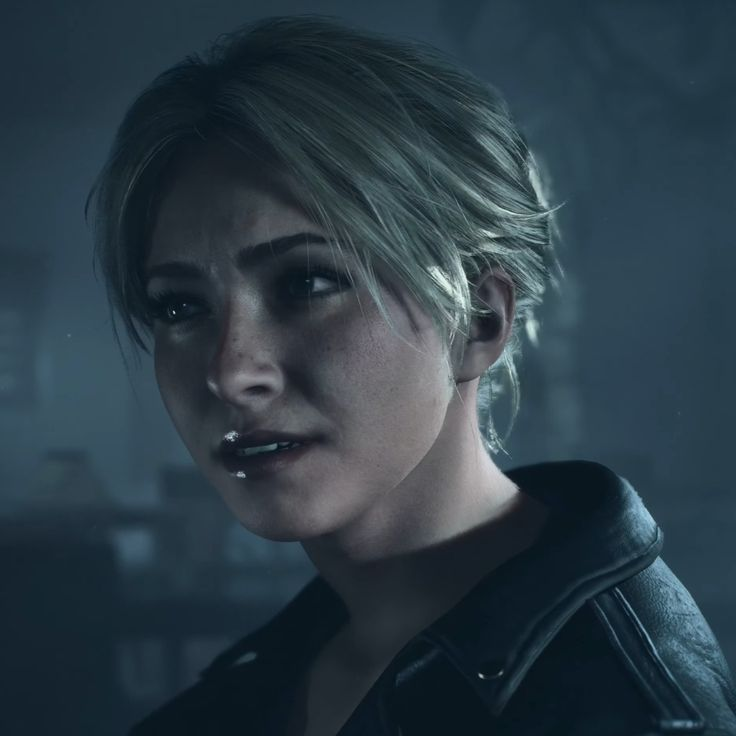
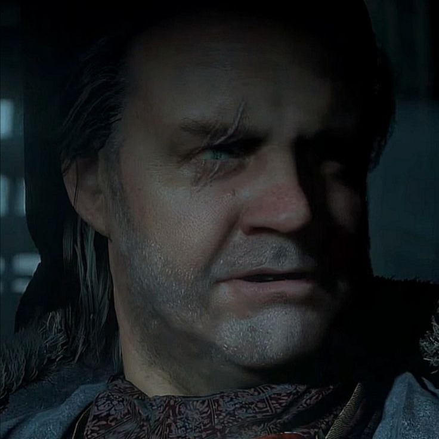

UNTIL DAWN

Samantha Giddings
Hannah's best friend

Joshua Washington
Hannah and Beth's brother

Michael Munroe
Jessica's boyfriend
Emily Davis
Matt's girlfriend

Matthew Taylor
Emily's boyfriend

Ashley Brown
Has a crush on Chris

Christopher Hartley
Has a crush on Ashley

Jessica Riley
Mike's girlfriend
Beth Washington
Hannah’s younger twin and Josh’s little sister
Hannah Washington
Beth's older twin and Josh’s younger sister.

Dr. Alan J. Hill
A psychiatrist who appears throughout the game

The Stranger (Jack Fiddler)
A mysterious hermit named Jack Fiddler
Each character has their own unique traits and personalities, and the player's choices throughout the game can affect their relationships and ultimately determine their fate. The characters are well-developed and have their own backstories, which adds depth to the game's narrative and makes the player's choices feel more impactful.

Personality Traits: Brave, Confident, Caring, Determined
Sam is one of the most dependable and courageous characters in Until Dawn. She is calm under pressure and often thinks clearly when others panic. Her caring nature makes her someone who genuinely looks out for her friends, and she is willing to risk herself to protect them. Sam is confident and independent, but she also has a warm and playful side that makes her easy to like. Throughout the story, her bravery and determination make her a natural leader who stands strong even in terrifying situations.

Personality Traits: Funny, Manipulative, Intelligent, Traumatized
Josh Washington is a complex and deeply troubled character whose actions are shaped by past trauma and emotional pain. He is highly intelligent and creative, which allows him to plan elaborate situations, but this intelligence is often used in manipulative ways. Beneath his unpredictable behavior lies a vulnerable and broken individual struggling with loss and guilt. His instability makes him difficult to understand, as he shifts between humor, control, and emotional distress. Josh’s character adds a darker psychological layer to the story, showing how unresolved trauma can deeply affect a person’s actions and perception of reality.

Personality Traits: Confident, Brave, Protective, Determined
Mike Munroe is one of the most dynamic characters in the story, showing major growth throughout the game. At first, he appears charming, confident, and carefree, but when danger begins, he reveals a brave and determined side. Mike is willing to take risks and face terrifying situations in order to protect others. His quick thinking and strong survival instincts make him one of the most capable characters. Beneath his bold attitude, he also shows loyalty and a genuine desire to help his friends survive.

Personality Traits: Social, Intelligent, Assertive, Stubborn
Emily Davis is a strong-willed and highly capable character who stands out for her intelligence and determination. She is confident, outspoken, and never afraid to take control in difficult situations. Emily can be demanding and sharp-tongued, but she is also extremely resourceful when survival is at stake. Her quick thinking and problem-solving skills make her one of the most competent characters in the group. Beneath her tough exterior, she shows resilience and the ability to stay focused under pressure.

Personality Traits: Loyal, Kind, Protective, Patient
Matt Taylor is one of the most genuine and dependable characters in the group. He is kind-hearted, respectful, and often tries to keep peace during conflicts. Matt’s loyalty makes him someone who deeply cares about the people close to him, and he is willing to protect them when danger appears. Although he can be quiet and patient, he also shows courage when the situation becomes serious. His calm and supportive nature makes him a trustworthy presence throughout the story

Personality Traits: Coward, Sensitive, Cautious, Compassionate
Ashley Brown is a thoughtful and emotionally sensitive character who often reacts strongly to the terrifying events around her. She is intelligent and observant, usually trying to understand situations before acting. Ashley tends to be cautious and fearful in dangerous moments, but her compassion shows through the care she has for others. Her emotional honesty makes her feel realistic and relatable, as she responds to fear in a very human way. Despite her vulnerability, she remains an important part of the group.

Personality Traits: Humorous, Nervous, Protective, Brave
Chris Hartley is a witty and likable character who often uses humor to ease tension in stressful moments. He is intelligent and thoughtful, usually trying to make rational decisions when things become chaotic. Chris is deeply loyal to the people he cares about and shows genuine concern for their safety. Although he can seem nervous at times, he proves to be courageous when faced with real danger. His mix of humor, heart, and bravery makes him one of the most relatable characters in the story.

Personality Traits: Vulnerable, Flirtatious, Energetic, Social
Jessica Riley is a lively and outgoing character who often brings energy to the group. She appears confident, playful, and enjoys attention, using humor and charm to express herself. Jess can come across as bold and carefree, but beneath that surface she also has a vulnerable and emotional side. When faced with danger, her confidence gives way to fear, revealing a more human and sensitive nature. Her personality adds both fun and emotional depth to the story.

Personality Traits: Sensitive, Lonely, Emotional, Trusting
Hannah Washington is a sensitive and emotionally vulnerable character whose feelings deeply influence her actions. She often seeks acceptance and connection from others, but her loneliness makes her more fragile in social situations. Hannah is emotional and expressive, which means she feels both happiness and pain very strongly. She is also trusting, sometimes too easily believing in others, which unfortunately leads her into difficult situations. Her character plays an important emotional role in the story, highlighting themes of isolation, betrayal, and tragedy.

Personality Traits: Caring, Responsible, Protective, Sensitive
Beth Washington is a caring and responsible character who deeply values her family, especially her sister. She is protective and tries to keep people safe, often putting others before herself. Beth is emotionally sensitive, which makes her more affected by the conflicts and tension within the group. Despite the limited time she appears in the story, her presence is important because her actions and decisions strongly influence the events that follow.

Personality Traits: Intimidating, Analytical, Manipulative, Mysterious
Dr. Alan J. Hill is a deeply unsettling and enigmatic figure who appears throughout the psychological segments of the story. He presents himself as a psychiatrist, but his true nature and purpose remain unclear. Dr. Hill is highly analytical and observant, often breaking down the player’s fears and decisions in a controlled, almost clinical way. At the same time, he can be manipulative and psychologically intense, making the player question reality. His presence adds a strong psychological horror element to the game, as he constantly blurs the line between guidance and intimidation

Personality Traits: Mysterious, Knowledgeable, Cautious, Determined
The Stranger (Until Dawn) is a mysterious and highly experienced figure who knows far more about the dangers on the mountain than the other characters. He is cautious and always aware of the risks, often acting carefully rather than impulsively. His knowledge of the creatures and past events makes him an important source of information. Although he keeps his distance and does not fully trust others easily, he is determined to stop the threat and prevent further tragedy. His secretive nature adds tension and depth to the story